Next: Heat transfer Up: Types of analysis Previous: Steady state dynamics Contents
In a direct integration dynamic analysis, activated by the
*DYNAMIC keyword, the equation of motion is integrated in
time using the  -method developed by Hilber, Hughes and Taylor
[65] (unless the massless contact method is selected; this method is treated
at the end of this section). The method is implemented exactly as described in
[24]. The parameter
-method developed by Hilber, Hughes and Taylor
[65] (unless the massless contact method is selected; this method is treated
at the end of this section). The method is implemented exactly as described in
[24]. The parameter  lies in the interval [-1/3,0] and
controls the high frequency dissipation:
lies in the interval [-1/3,0] and
controls the high frequency dissipation:  =0 corresponds to the
classical Newmark method inducing no dissipation at all, while
=0 corresponds to the
classical Newmark method inducing no dissipation at all, while  =-1/3
corresponds to maximum dissipation (default is
=-1/3
corresponds to maximum dissipation (default is  =-0.05). The user can choose between an implicit and explicit version of the algorithm. The implicit version (default) is unconditionally stable.
=-0.05). The user can choose between an implicit and explicit version of the algorithm. The implicit version (default) is unconditionally stable.
In the explicit version, triggered by the parameter EXPLICIT on the *DYNAMIC
keyword card, the mass matrix is lumped, and a forward integration scheme is
used so that the solution can be calculated without solving a system of
equations. This corresponds to section 2.11.5 in [24]. The mass
matrix only has to be set up once at the start of each step and no stiffness
matrix is needed. Indeed, the terms in equation (2.475) in
[24] in which the 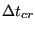 matrix is used correspond to the internal
forces. They can be calculated directly from the stresses without need to set
up the stiffness matrix. Therefore, each increment is much faster than with the implicit
scheme. Furthermore, in the explicit method no iterations are
performed, so each increment consists of exactly one iteration. However, the
explicit scheme is only conditionally stable: in the
matrix is used correspond to the internal
forces. They can be calculated directly from the stresses without need to set
up the stiffness matrix. Therefore, each increment is much faster than with the implicit
scheme. Furthermore, in the explicit method no iterations are
performed, so each increment consists of exactly one iteration. However, the
explicit scheme is only conditionally stable: in the  -method, which in
CalculiX is also used for explicit calculations (unless the massless contact
method is selected), the maximum
time step
-method, which in
CalculiX is also used for explicit calculations (unless the massless contact
method is selected), the maximum
time step
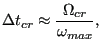 |
(539) |
where
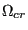 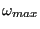
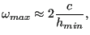 |
(540) |
where 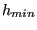 is the velocity of sound for the material at stake and
is the velocity of sound for the material at stake and  satisfies [68]:
satisfies [68]:
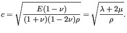 |
(541) |
It corresponds to the wave speed of longitudinal waves, which are faster than
transversal waves, for which the speed amounts to
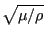
First, the difference between the phase velocity and group velocity of a wave is explained. A one-dimensional wave is described by
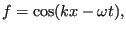 |
(542) |
in which 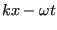 is the wave number and
is the wave number and  the angular frequency. For
constant values of
the angular frequency. For
constant values of  and
and  the wave has a constant amplitude for
the wave has a constant amplitude for
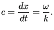 |
(543) |
Now, adding to this wave a wave with slightly different wave number and angular frequency one obtains:
where
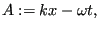 |
(545) |
and
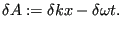 |
(546) |
The result in the last line of Equation (544) is the original wave
(
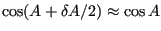
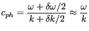 |
(547) |
modulated by a wave whose velocity amounts to the so-called group velocity:
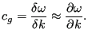 |
(548) |
The function  versus
versus  is called the dispersion relationship. If
this relationship is linear the phase and group velocity coincide. If not,
they differ.
is called the dispersion relationship. If
this relationship is linear the phase and group velocity coincide. If not,
they differ.
To obtain the phase velocity in three dimensions for an arbitrary material the expression for a three-dimensional planar wave:
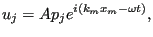 |
(549) |
where
 is the displacement vector, A is the amplitude,
is the displacement vector, A is the amplitude,
 is the polarization vector and
is the polarization vector and
 is the wave
number vector, is substituted in the general homogeneous equation of motion:
is the wave
number vector, is substituted in the general homogeneous equation of motion:
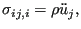 |
(550) |
where
 is the stress tensor, a comma denotes
differentiation w.r.t. space and a dot denotes differentiation
w.r.t. time. Indeed, using the elastic relationship
is the stress tensor, a comma denotes
differentiation w.r.t. space and a dot denotes differentiation
w.r.t. time. Indeed, using the elastic relationship
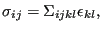 |
(551) |
the definition of linear strain
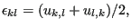 |
(552) |
and the symmetry properties of the elasticity tensor
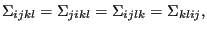 |
(553) |
one obtains the following form for the equation of motion:
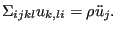 |
(554) |
Sustitution of the wave equation now yields:
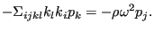 |
(555) |
Setting
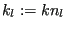 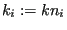
where
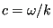 ):
):
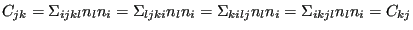 |
(557) |
the left hand matrix is symmetric. Furthermore, for an arbitrary vector
 one obtains:
one obtains:
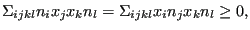 |
(558) |
since
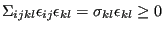 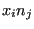 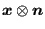 is positive definite. Therefore, the
eigenvalues are real and positive.
is positive definite. Therefore, the
eigenvalues are real and positive.
For an isotropic linear elastic material the elasticity tensor satisfies ([24]):
and component 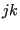 amounts to:
amounts to:
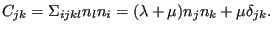 |
(560) |
Therefore,  can be thought of consisting of the following row vectors (or
column vectors, since it is a symmetric matrix):
can be thought of consisting of the following row vectors (or
column vectors, since it is a symmetric matrix):
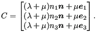 |
(561) |
Setting the determinant of the eigenvalue matrix to zero amounts to:
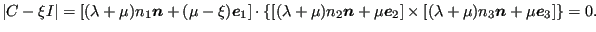 |
(562) |
Multiplying out the different terms leads to:
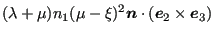 |
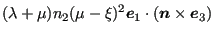 |
||
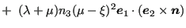 |
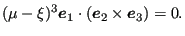 |
(563) |
Using identities such as
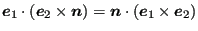
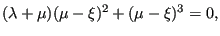 |
(564) |
which leads to a double root 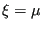 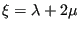 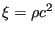 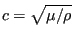 and therefore these are
transversal waves, whereas the latter eigenvector is parallel to the wave
vector and corresponds to a longitudinal wave.
and therefore these are
transversal waves, whereas the latter eigenvector is parallel to the wave
vector and corresponds to a longitudinal wave.
In order to obtain an expression for the group velocity of the wave the
derivative of the angular frequency  w.r.t. the wave number vector
w.r.t. the wave number vector
 is needed. Multiplying the eigenvalue Equation [556] with the normalized polarization vector yields:
is needed. Multiplying the eigenvalue Equation [556] with the normalized polarization vector yields:
| (565) |
Taking the derivative w.r.t. leads to:
| (566) |
or
| (567) |
This amounts to:
| (568) |
Since the term equals , i.e. it is identical with the first term in the equation. Therefore:
| (569) |
or
| (570) |
which amounts to:
The latter equation expresses the group velocity as a function of the polarization vector, the wave vector and the phase velocity.
Substituting the isotropic elasticity tensor from Equation [559] leads to:
| (572) |
For the longitudinal wave, knowing that
,
,
 and
one gets
and
one gets
| (573) |
For the transversal waves and . Therefore:
| (574) |
Consequently, for an isotropic elastic material the phase and group velocity coincide. For an anisotropic material, such as a single crystal, this is not necessarily the case.
Now, coming back to the original question of a stable time step in an explicit
dynamic procedure it is clear that the maximal group speed is to be taken. For
an isotropic material this is the longitudinal wave speed. For an anisotropic
material the group speed may depend on the wave vector
 . So for a given wave vector Equation
[556] has to be solved to yield the phase velocities
. So for a given wave vector Equation
[556] has to be solved to yield the phase velocities  and the corresponding polarization vectors
and the corresponding polarization vectors
 . The latter ones
have to be substituted in Equation [571] to find the group
velocities. Now, the wave vector direction has to be varied so as to find the
maximum group velocity feasible for a material characterized by the specific
elastic tensor
. This velocity is then used to calculate
and
.
. The latter ones
have to be substituted in Equation [571] to find the group
velocities. Now, the wave vector direction has to be varied so as to find the
maximum group velocity feasible for a material characterized by the specific
elastic tensor
. This velocity is then used to calculate
and
.
For the contact spring elements, the idealization of a spring with spring
constant  connecting two nodes with nodal masses and is
used. For such a system one obtains:
connecting two nodes with nodal masses and is
used. For such a system one obtains:
| (575) |
where and . For node-to-face penalty contact and face-to-face penalty contact the nodal mass on the facial sides can be obtained by using the shape functions at the spring location.
To accelerate explicit dynamic calculations selective mass scaling can be used [73]. It was introduced in CalculiX in the course of a Master Thesis [23]. Applying selective mass scaling the time increment can be increased, which reduces the overall computational time. The selective mass scaling procedure starts from the lumped mass matrix, which for linear elements and one global coordinate direction looks like (examplary for a C3D8-element):
| (576) |
where is the total mass of the element. Now, this mass matrix is augmented by a multiple of itself after removal of the rigid body translational modes:
| (577) |
where (writing
 as a column vector)
as a column vector)
| (578) |
This leads to:
| (579) |
Now, the division by 8 in the denominator of the matrix is approximated by a
division by 7 to yield 1 on the diagonal and a scaling factor  is
introduced:
is
introduced:
| (580) |
In conclusion, the diagonal elements of matrix  are now modified by a
factor . Since the natural frequency
and
the time increment
, one can conclude that
are now modified by a
factor . Since the natural frequency
and
the time increment
, one can conclude that
| (581) |
from which
. For other element types “7” should be replaced by  and “8” by
and “8” by  ,
where n is the number of nodes in the element. The resulting mass matrix is
now not diagonal any more and a LU-decomposition has to be performed. Since
the mass does not change during the calculation, this decomposition has
to be performed only once at the start of the calculation.
,
where n is the number of nodes in the element. The resulting mass matrix is
now not diagonal any more and a LU-decomposition has to be performed. Since
the mass does not change during the calculation, this decomposition has
to be performed only once at the start of the calculation.
In CalculiX, selective mass scaling is triggered by specifying the minimum time
increment
which the user is willing to tolerate underneath the *DYNAMIC keyword (third
parameter). If for any volumetric element the increment size
calculated by CalculiX
(based on the wave speed) is less than the
minimum, the mass of this element is automatically selectively scaled. In that
case a message is printed and the
elements for which the mass was redistributed are stored in file
“jobname_WarnElementMassScaled.nam”. This file can be read in any active cgx-session
by typing “read jobname_WarnElementMassScaled.nam inp” and the elements
can be appropriately visualized. If the mass of too many elements is
redistributed, the lowest eigenfrequencies might be affected, leading to wrong
results. Therefore, the maximum allowed time increment should be limited by a
maximum allowed change of the lowest eigenfrequency by, e.g. 1 %. It is the
responsability of the user to check this by performing a
*FREQUENCY calculation in which the desired time step is
provided as the fourth entry underneath the *FREQUENCY card. In addition, the
value of  can also be specified.
can also be specified.
For spring elements the mimimum time increment specified by the user is obtained by reducing the spring stiffness. CalculiX stores the maximum spring stiffness reduction to standard output.
Without a minimum time increment no selective mass scaling nor spring stiffness reduction is applied.
The following damping options are available:
For explicit dynamic calculations an additional hard contact formulation has been coded within a procedure characterized by:
From now on the method will be called the massless explicit dynamics method. Its implementation closely follows the frictional flow diagram in [69]. From this publication it is clear that the contactless stiffness matrix is needed. The submatrix related to the contact degrees of freedom (master and slave) is used to set up and solve an inclusion problem in an implicit way. The other submatrices are used to calculate the right hand side of the dynamic equations. The left hand side of these equations is made up of a combination of the mass and damping matrix. It is assumed that these latter matrices do not change during the step, therefore, they can be factorized once at the beginning of the step.
If the NLGEOM parameter is not used on the *STEP card and if all materials are linear the stiffness matrix is calculated only once at the beginning of the step, else it is calculated in each increment which substantially increases the computational time.
Limitations right now include:
The method is triggered by the option TYPE=MASSLESS on all *CONTACT PAIR cards in a *DYNAMIC, EXPLICIT procedure only. In a *STATIC or *DYNAMIC implicit step the contact definition is replaced by TYPE=NODE TO SURFACE. Note that within one input deck only one type of *CONTACT PAIR is allowed. Since the contact is hard, the only parameter is the friction coefficient.
In the massless explicit dynamics method selective mass scaling is also
used. It is triggered in exactly the same way as for the  -method,
i.e. by specifying a minimum time increment exceeding the stable time
increment. In contrast to the
-method,
i.e. by specifying a minimum time increment exceeding the stable time
increment. In contrast to the  -method the change of mass matrix is
added to the unlumped mass. Selective mass scaling is particularly
advantageous in the presence of few very small elements which lead to an
extremely small stable time increment.
-method the change of mass matrix is
added to the unlumped mass. Selective mass scaling is particularly
advantageous in the presence of few very small elements which lead to an
extremely small stable time increment.
For all dynamic calculations (implicit dynamics, explicit dynamics with penalty contact or explicit dynamics with massless contact) a energy balance can be requested. For implicit dynamics this is done by default, for explicit dynamics the balance is calculated if the user has requested the output variable ENER underneath a *EL PRINT, *EL FILE or *ELEMENT OUTPUT keyword. This increases the computational time.